Верхняя куртка
Ветро- и влагозащитная ткань. Носите самостоятельно в межсезонье.
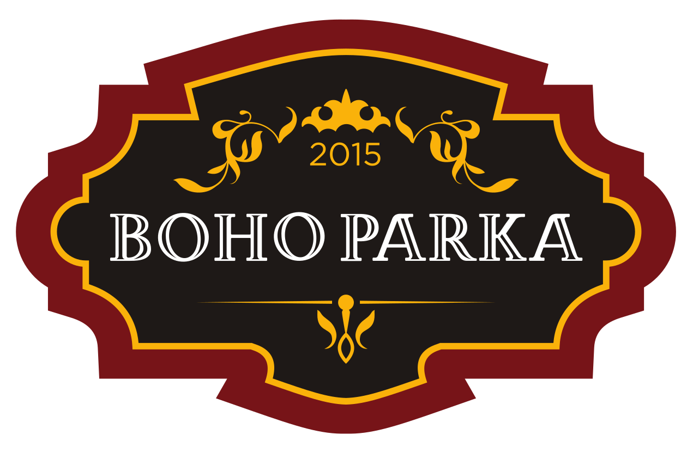
Обсудить паркуАвторские парки · с 2015 года
Создаём парки на съёмной меховой подстёжке — под ваш стиль, ритм и зиму.
Создать свою парку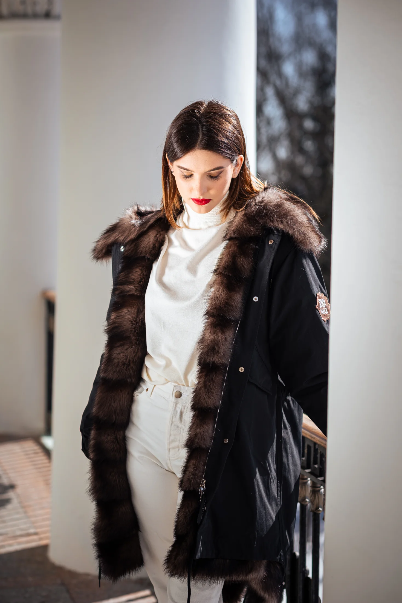
01 / Философия
Рождена в Москве. Согревает по всему миру.
02 / Устройство парки
Каждый элемент работает отдельно — и соединяется в вещь, готовую к настоящей зиме.
Ветро- и влагозащитная ткань. Носите самостоятельно в межсезонье.
Съёмная внутренняя куртка: «Еврозима» до −10° или «Суперзима» до −40°.
Защищает лицо от ветра и меняет настроение образа одним движением.
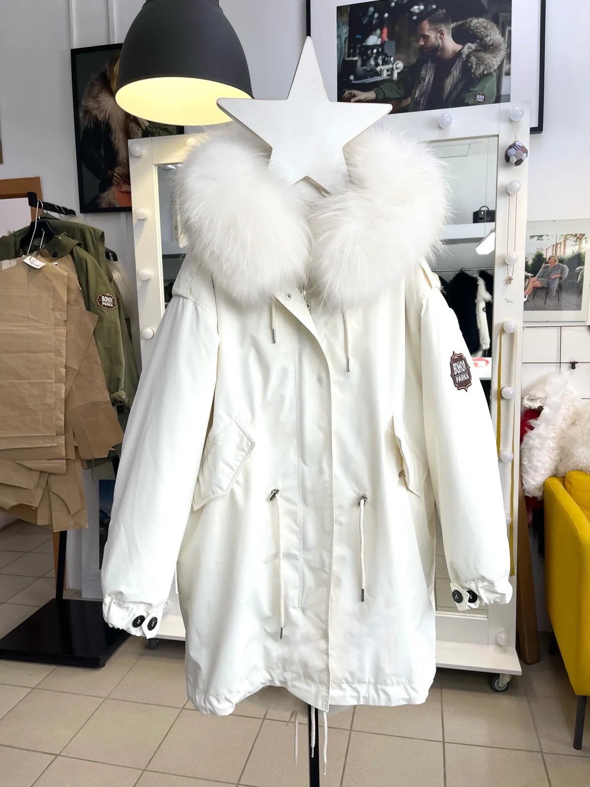
01020303 / Галерея
Мужские и женские, спокойные и дерзкие, из нового меха или из вашей любимой шубки.
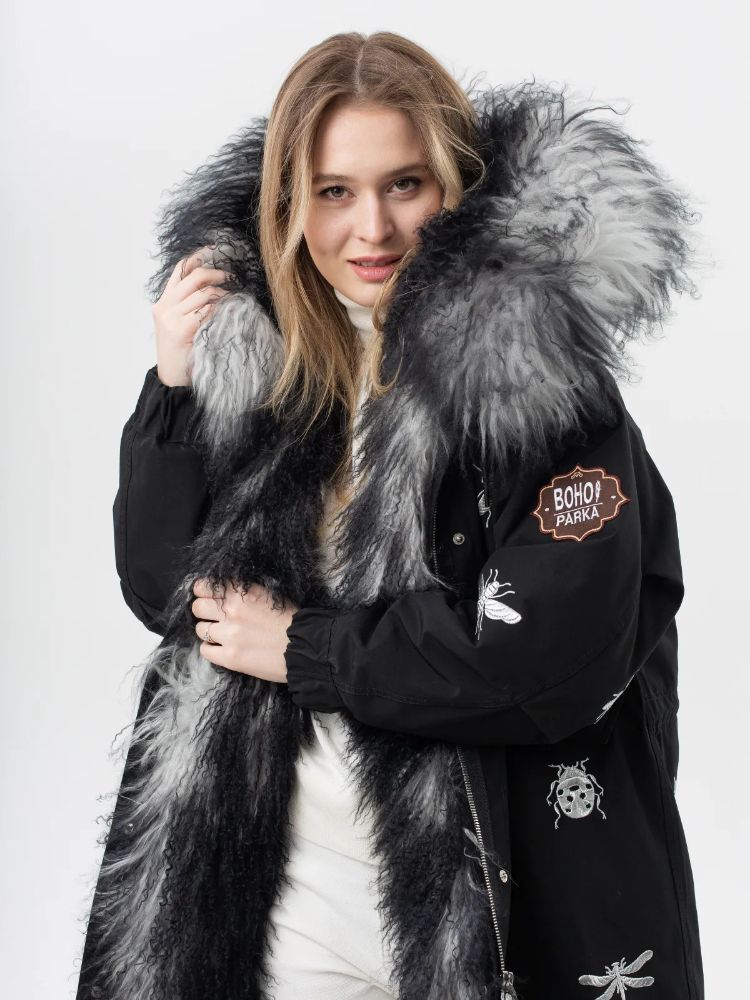
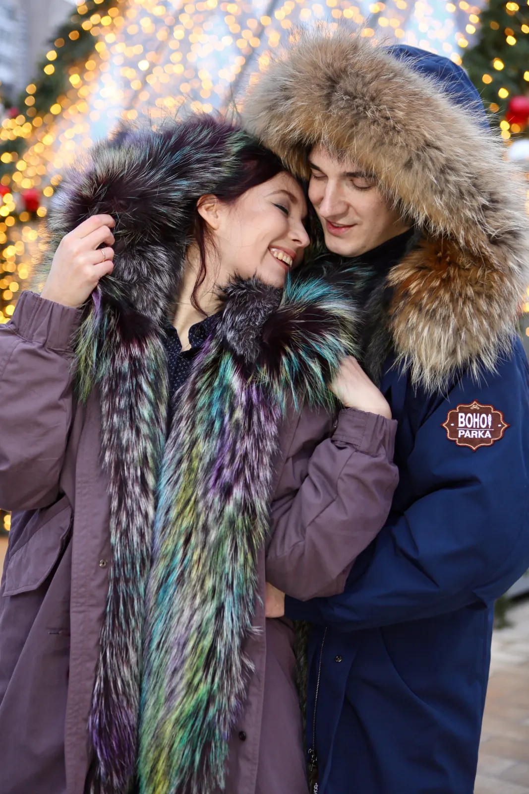
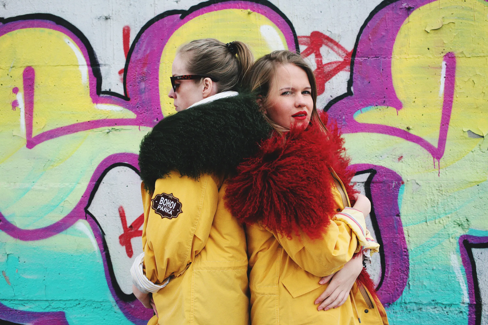
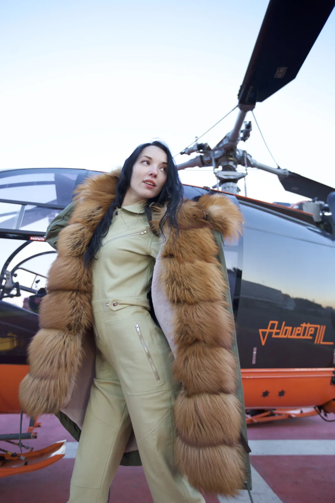
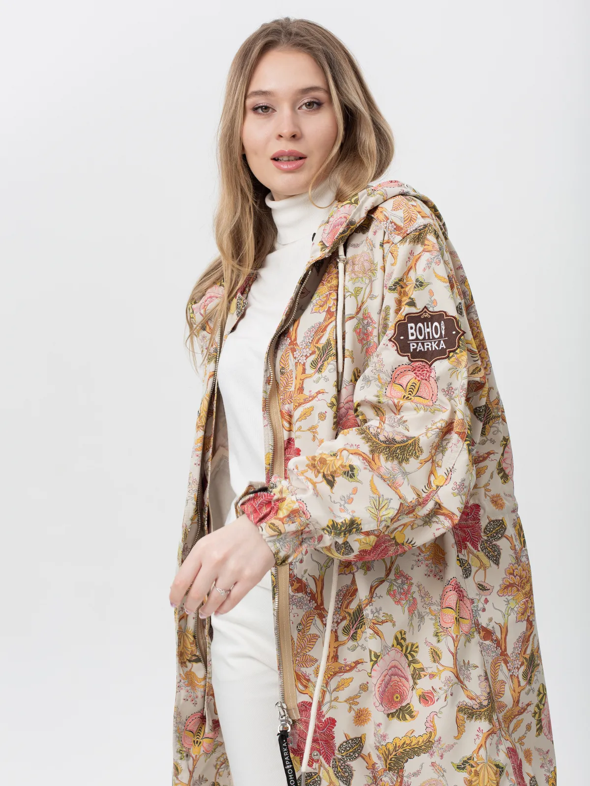
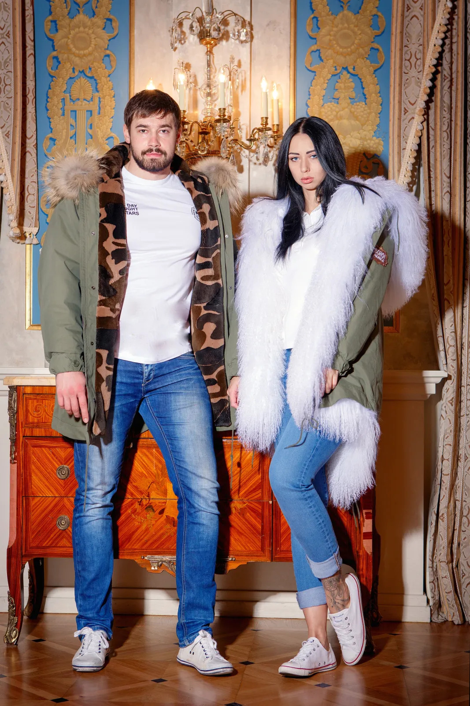
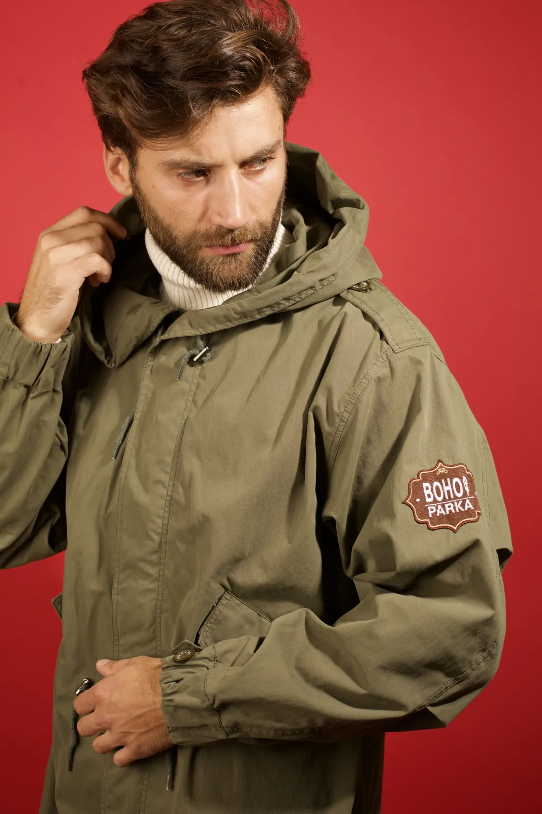
04 / Ваша комбинация
Короткая 80 см, базовая 90 см или удлинённая 100 см.
Более 20 оттенков и ткани разной плотности для сезона и климата.
Из коллекции мастерской — или тот, что уже хранит вашу историю.
Авторская вышивка, принт, фурнитура и точная посадка.
05 / Перекрой
Разберём старое меховое изделие, оценим материал и превратим его в съёмную подстёжку или выразительную опушку. Память останется с вами — форма станет современной.
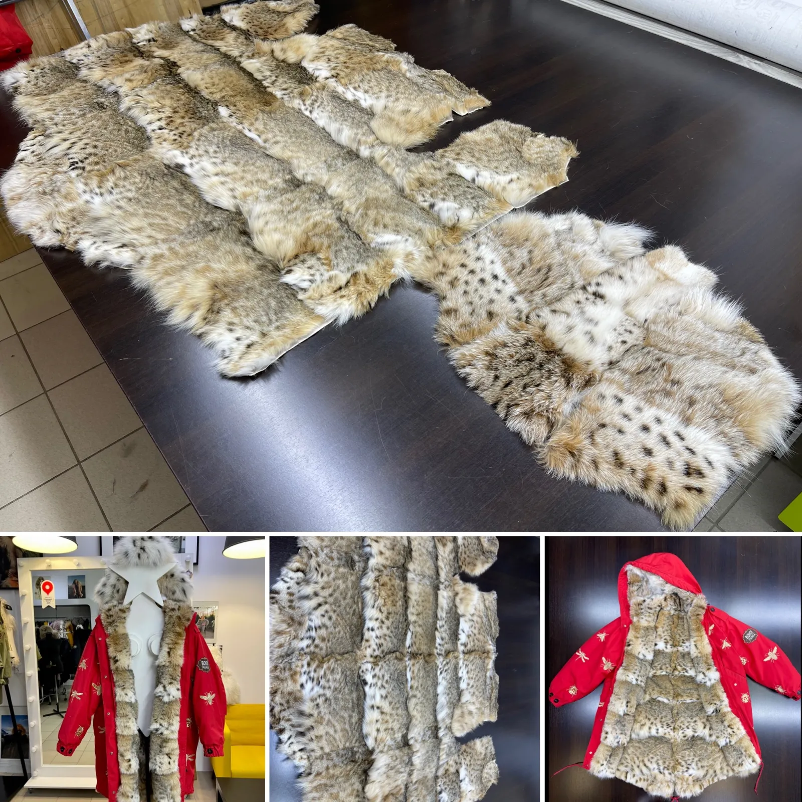
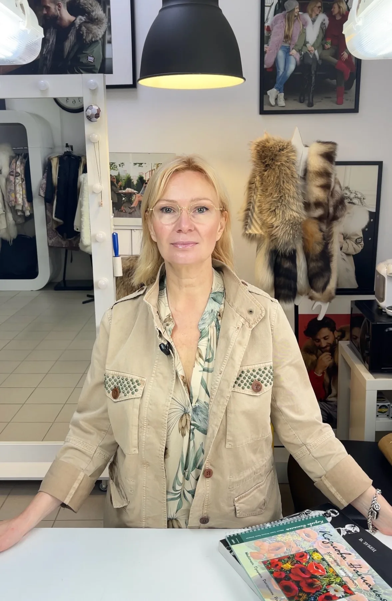
06 / О бренде
«Я мечтала создать совершенную куртку — тёплую, красивую и по-настоящему вашу».
Наталья много лет работала художником-декоратором, изучала дизайн одежды и швейное дело. В 2015 году открыла мастерскую парок на меховой подкладке. Сегодня BOHO! PARKA носят от Камчатки до Италии.
07 / Отзывы
«В ней очень тепло, а я тот ещё мерзляк. Могу в небольшой минус спокойно носить тонкие блузочки и не мёрзнуть совсем».
Ольга Бакеева
«Сейчас на севере минус 47. Я не мёрзну, мне тепло. И ещё очень приятно было с вами общаться!»
Маргарита
«Лицо не замёрзло при −25, хотя был сильный ветер. Тепло распределяется равномерно — как у печки».
Ирина Крылова
08 / Вопросы
Обычно от 4 до 10 дней: верхние куртки готовятся заранее, а меховую подстёжку мы создаём под выбранную вами комбинацию.
Да. Наталья оценит состояние меха и предложит, как лучше распределить его на подстёжку, опушку или аксессуары.
В мастерской в Зеленограде по предварительной договорённости. Там можно сравнить длину, посадку, ткани и мех.
Да. Снимите подстёжку и опушку — получится самостоятельная ветро- и влагозащитная куртка для межсезонья.
Ваша зима начинается здесь